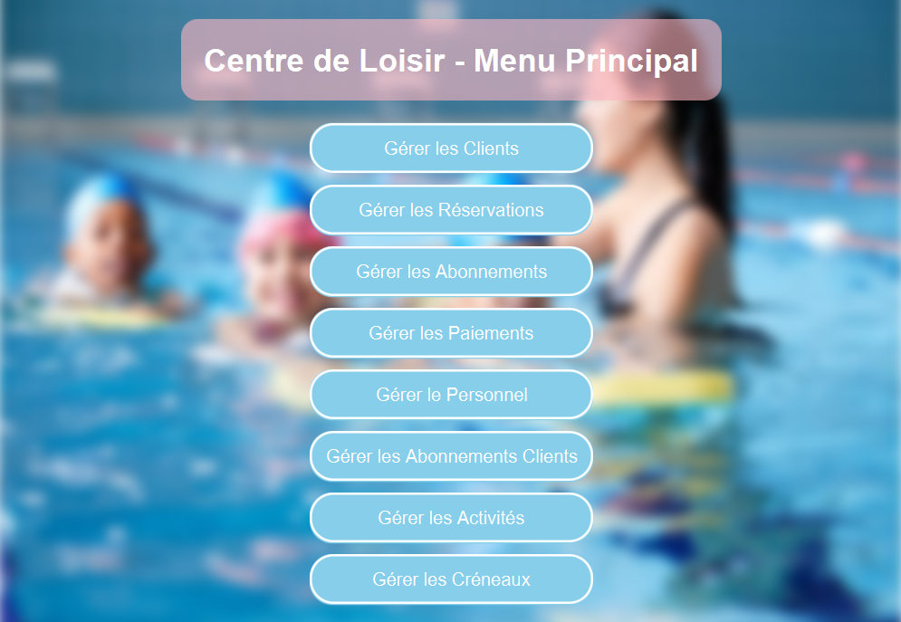
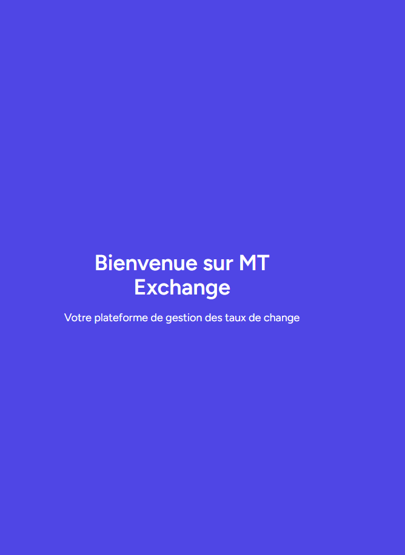
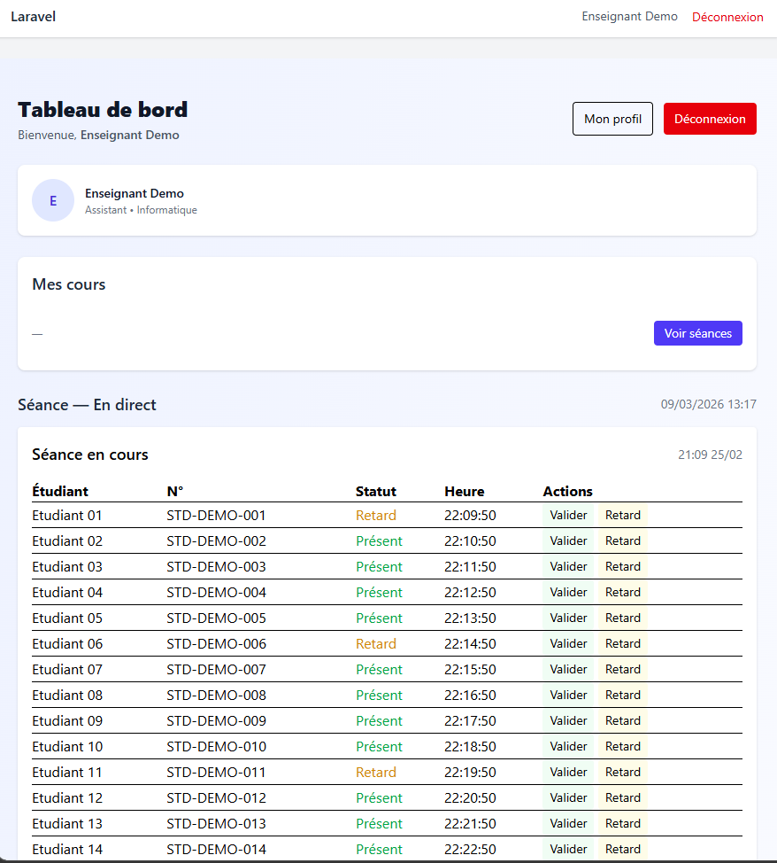
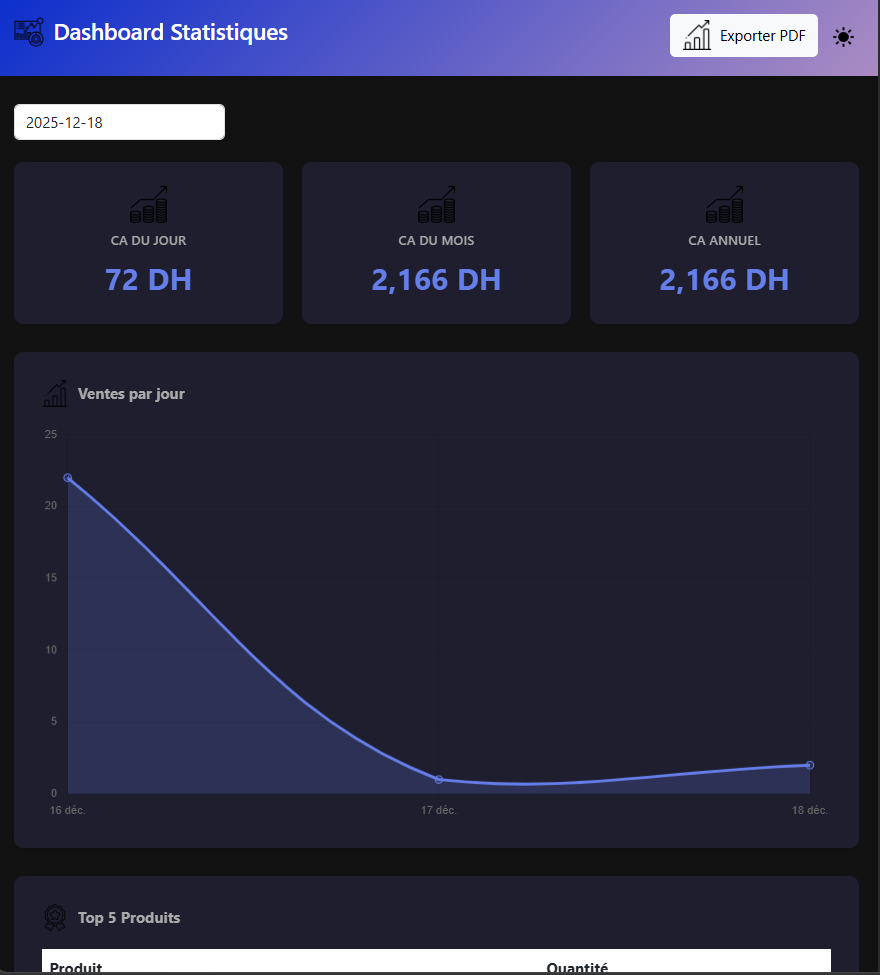
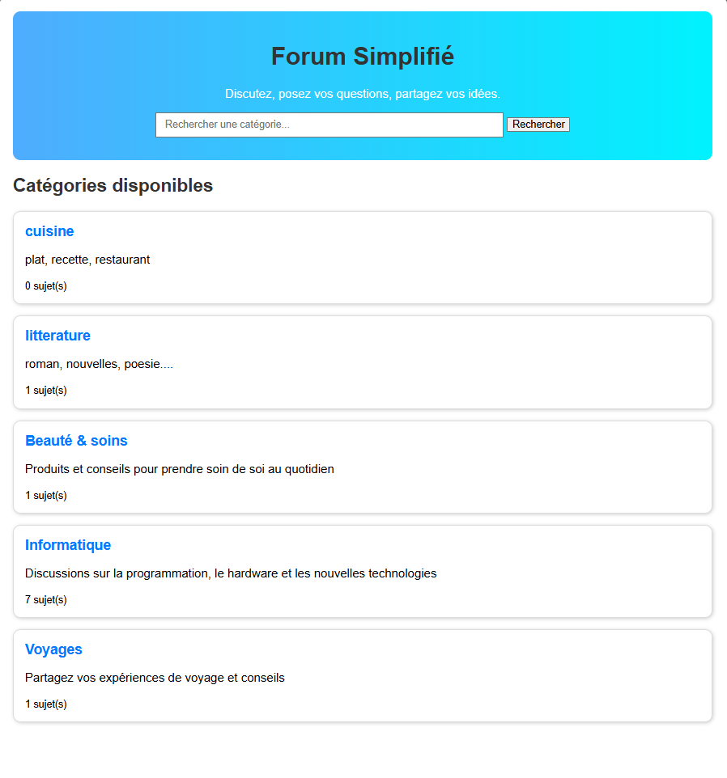
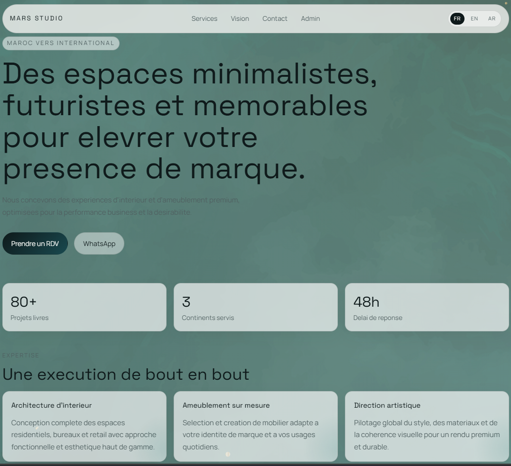

Frontend
HTML, CSS, JavaScript, Blade, Tailwind CSS
Passionnée par la gouvernance IT, la transformation digitale, l'analyse des données et la conception de solutions utiles, avec une approche structurée et orientée impact.
Présentation
Étudiante en ingénierie motivée, spécialisée en Management et Gouvernance des Systèmes d'Information, désireuse d'appliquer ses compétences analytiques et de résolution de problèmes dans un environnement professionnel dynamique.
Passionnée par la gestion des systèmes d'information, l'analyse des données, la transformation digitale et la gouvernance IT.
Savoir-faire
HTML, CSS, JavaScript, Blade, Tailwind CSS
PHP Laravel, Python, Java (JavaFX, Spring Boot, Java EE), C
MySQL
UML, Merise
ERP, gestion de projet, intelligence artificielle, recherche opérationnelle
Git, GitHub, VS Code, IntelliJ, Postman
Engagement
Vice-chef de la cellule technique de l'événement DigitalGov de la filière MGSI
Hult Prize : membre de l'équipe gagnante de la finale de l'ENSA Khouribga
ClubCodex : membre de l'unité d'exposition
Réalisations

Développement d’une application desktop en Java avec JavaFX permettant la gestion complète d’un centre de loisirs. L’application permet d’administrer les activités, le personnel, les réservations et les paiements, avec une interface graphique interactive facilitant l’organisation et le suivi des opérations du centre.

une application web basée sur Laravel permettant la collecte, la centralisation et l’affichage des taux de change provenant de plusieurs fournisseurs d’API. Le système optimise les appels aux APIs afin de réduire les requêtes et les ressources consommées, tout en facilitant la consultation et la gestion des taux.

Développement d’une application web de gestion des présences étudiantes via QR code permettant le suivi automatisé des présences lors des séances. Le système inclut la gestion des séances, l’enregistrement des présences et des tableaux de bord de suivi pour les enseignants.

Réalisation d’une application web de gestion de supermarché permettant l’administration des produits, commandes, stocks et statistiques commerciales. L’application fournit des outils de gestion facilitant le suivi des ventes et l’organisation des ressources.

Développement d’un site web de mini-forum dynamique permettant aux utilisateurs de créer des sujets, publier des commentaires et interagir au sein d’une communauté en ligne.

Application web vitrine premium pour un studio d’architecture d’intérieur et d’ameublement, orienté marché marocain et international. Le site est multilingue (FR/EN/AR), responsive, rapide, avec une identité visuelle minimaliste/futuriste. Il intègre un parcours de conversion complet: formulaire de lead, contact WhatsApp, automatisations backend, et un espace admin sécurisé pour gérer les demandes (recherche, tri, filtres, export CSV).
Coordonnées
Disponible pour des opportunités, des stages et des collaborations autour du développement, de la data et des systèmes d'information.